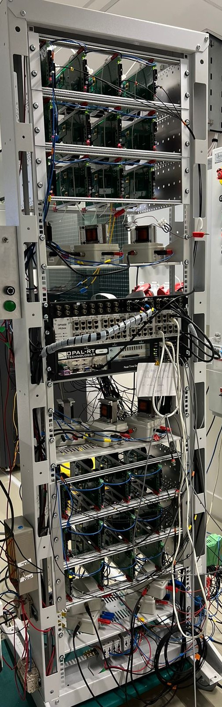

Modular Multilevel Converter (MMC)
Custom MMC hardware built in house for reaseach application.

Project Overview
The MMC was already present but was configured as half-bridge, the system was now upgraded to full bridge, thus rewritting the firmware and rewiring the setup.
Results
The completed working setup and explanation about how it was made is shown below.